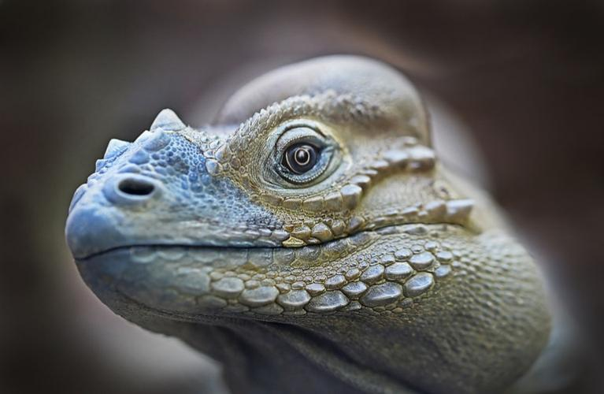
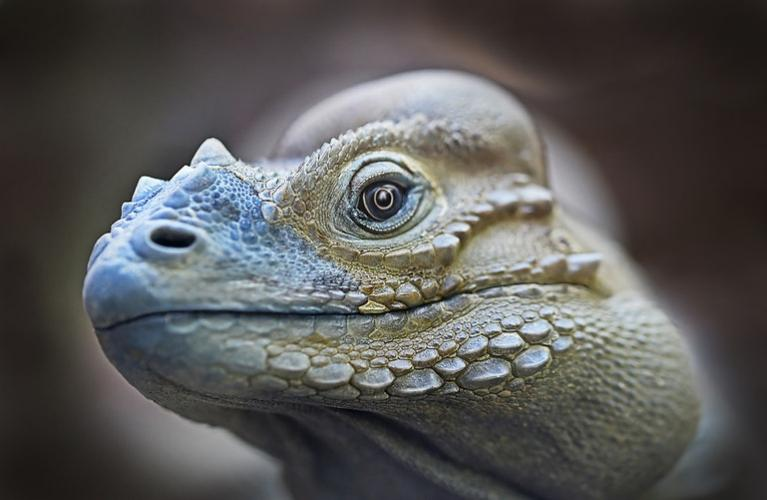

IGUANAS

La iguana es un reptil perteneciente a la familia Iguanadiae. Su tamaño está entre los 15 cm
hasta los 2 metros de largo y puede llegar a pesar unos 15 kg. Cuando están jóvenes tienen una
coloración con tonos verdes y al ir madurando predomina un color grisáceo con crestas o espinas
en su espalda.
La alimentación de la iguana va variando según su etapa de vida, pero la mayor parte de sus años
son herbívoras. Viven en lugares tropicales con mucha vegetación y es un animal que puede ser
domesticado.

 
